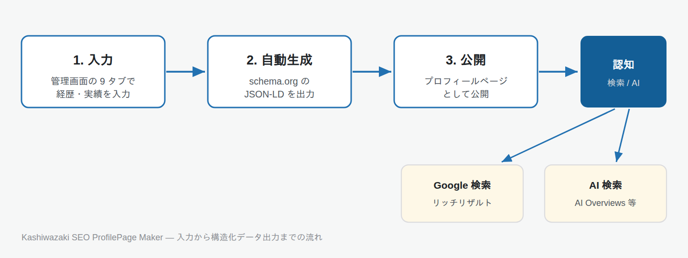

Kashiwazaki SEO ProfilePage Maker マニュアル

schema.org の ProfilePage / Person 構造化データを完備した、SEO・E-E-A-T 強化型のプロフィールページ生成プラグインです。人物の知的資産（著作・特許・論文・取材・登壇など）を機械可読化し、Google Knowledge Graph と AI 検索の双方から認知される Authority Page を作成します。
主要機能
専用プロフィール投稿タイプ
9 つのタブに分かれた管理画面で、氏名・肩書・経歴・著作・論文・特許・取材・講演・受賞・資格などを 1 ページに集約して入力・管理できます。各タブには入力の完成度ゲージが表示されます。
構造化データの自動出力
ProfilePage + Person を中核に、学術論文・書籍・特許・取材・講演などを schema.org 型の JSON-LD として自動出力します。パンくず (BreadcrumbList) や speakable にも対応します。
URL と表示順のカスタマイズ
/profile/ や /member/ など複数の URL プレフィックスを登録でき、プレフィックス変更時は 301 リダイレクトで旧 URL を保全します。表示順プリセットも切り替えできます。

このプラグインでできること
- 人物プロフィールを専用の投稿タイプとして作成・管理する
- 著作・論文・特許・取材・講演などの実績を schema.org でマークアップする
- Google リッチリザルト / AI 検索に認識されやすい構造化データを自動生成する
- プロフィールページの URL 階層 (プレフィックス) を自由に設計する
- ショートコードで任意の固定ページ・投稿にプロフィールを埋め込む
- 個人情報 (生年月日・性別など) の公開・非公開を項目単位で制御する
目次
- 概要 - プラグインの概要と主要機能の紹介
- インストール・初期設定 - インストール手順と管理画面の構成
- プロフィールの作成・編集 - 9 タブの入力フォームの使い方
- 構造化データ (JSON-LD) - schema.org 出力と設定
- 設定（全オプション） - URL プレフィックスと表示順プリセット
- カスタムブロックとショートコード - 汎用ブロックと埋め込み
- トラブルシューティング - よくある問題と解決方法
動作要件
- WordPress 6.0 以上
- PHP 8.0 以上
- PHP の DOMDocument (ext-dom) 拡張 (HTML 正規化・表示順制御に使用)